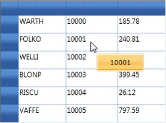

Essential Grid provides support to associate individual cells with ToolTips. A ToolTip is a graphical user interface. A ToolTip can appear as a small hover box with information about an item. You can place any kind of content—such as text, image, or any control—into the ToolTip host.
Essential Grid exposes a style property named TooltipTemplateKey, which is used for generating ToolTips. You can define this template in a XAML file and assign its name to the style.TooltipTemplateKey property. The style content defined in this template is used to display the ToolTip.
Displaying the ToolTip
Set the style.ShowTooltip property to true to enable the display of the ToolTip.
Note: If style.ShowToolTip is set to false, then the default template associated with the grid will be loaded and display style.CellValue in a ToolTip.
Adding a ToolTip
The example below displays a customized border control in the ToolTip host. The grid is bound to the orders table in which the second column is assigned a ToolTip template that holds a data-bound text block used to display the ToolTip.
To add a ToolTip follow these steps:
1. Define a template for the ToolTip. The following code illustrates this.
|
[XAML]
<UserControl.Resources> <LinearGradientBrush x:Key="brdr" EndPoint="0,1" StartPoint="0,0"> <GradientStop Color="#FFFFE09F" Offset="0"/> <GradientStop Color="#FFFFD683" Offset="0.083"/> <GradientStop Color="#FFFFD57F" Offset="0.417"/> <GradientStop Color="#FFFFC15D" Offset="0.5"/> <GradientStop Color="#FFFFD276" Offset="0.917"/> <GradientStop Color="#FFE29800" Offset="1"/> </LinearGradientBrush> <DataTemplate x:Key="celltipTemplate"> <Border x:Name="Root" Width ="80" Height="30" CornerRadius="2" BorderThickness="1" Background="{StaticResource brdr}" BorderBrush="#FFFFD581"> <Border BorderBrush="#FFFFFFFF" BorderThickness="1" CornerRadius="1" Background="{StaticResource brdr}" Padding="3,0,3,0"> <Border.Resources> <Storyboard x:Key="Visible State"/> <Storyboard x:Key="Normal State"/> </Border.Resources> <ContentPresenter HorizontalAlignment="Center" VerticalAlignment="Center" Content="{Binding CellValue}" /> </Border> </Border> </DataTemplate> </UserControl.Resources> |
2. Then, associate the above template with the grid cell, as shown in the code below.
|
[C#] var style = dataGrid.Model[i, j]; style.ShowTooltip = true; style.TooltipTemplateKey = "celltipTemplate"; |
When the code runs, the following output will display, indicating that the ToolTip has been successfully added.

Figure 48: ToolTip